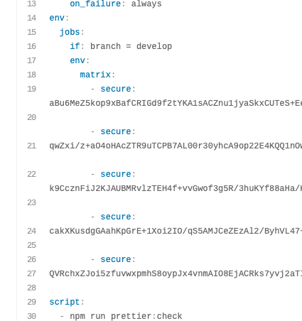

Travis-CI có hỗ trợ mã hoá biến môi trường trên nhiều nhánh không nhỉ?
Ngày 31 tháng 5 năm 2020
Số là một ngày đẹp trời, mạng ở VN quá chậm để kéo file lên Amazon S3. Kéo tầm 22.5MB lên, được tầm 30% là nó rớt. Và thế là phải cấu hình thêm CI/CD cho nhánh này.
Nói sơ một xíu, lúc trước mình đã cấu hình cho nhánh develop rồi nhưng nhánh staging thỉnh thoảng mới deploy nên cho chạy bằng cơm. Và thế là mình tìm hiểu xem có cách nào để 2 nhánh dùng chung tên biến môi trường đã được mã hoá nhưng khác giá trị không?

Cách cấu hình trên web
Bạn chỉ cần vào Settings của repository trên Travis và làm như hình.

Bạn kéo xuống phần Environment Variables, điền tên biến, giá trị và chọn nhánh. Công việc hết sức dễ dàng.
Có cách nào chỉnh trong file .travis.yml không nhỉ?
Phương án 1
Suy nghĩ xem có cách nào để cấu hình biến môi trường theo từng nhánh không? Tức là biến NODE_ENV ở nhánh develop thì nó sẽ mang giá trị là develop, còn ở nhánh staging thì giá trị là uat. Với điều kiện là phải mã hoá biến được.
Sau một hồi tìm hiểu thì thấy viết kiểu này có vẻ chạy được, thử xem nào.
Tham khảo
- Travis CI, Environment Variables